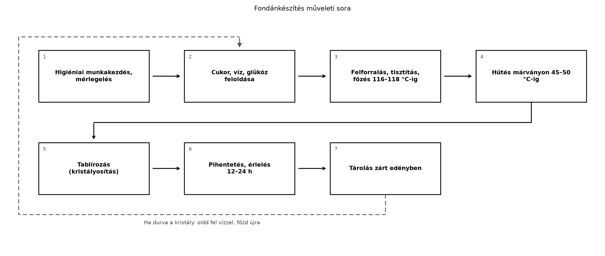

A reggeli műszakban a cukrász minyonokat készít. A minyonok alja piskóta, tetejük fondán. Ha a fondán durva, fénytelen, repedező, az egész tálca eladhatatlan. A francia fondant szó jelentése „olvadó”: a jól elkészített fondán a szájban olvad, állaga selymes, nem homokos. A tanuló itt tanulja meg, hogyan lesz a forró, áttetsző cukoroldatból hófehér, krémszerű, kenhető massza. Ez a félkész termék a későbbi Fondán melegítése, hígítása és felhasználása bevonásra alfejezetben tér vissza, és a minyonok, desszertek, tortabevonatok alapja.
Képzelj el egy márványasztalt. A cukrász az áttetsző cukoroldatot vékony sugárban ráönti. A réteg lassan hűl. Amikor már kézmeleg, de még alakítható, a cukrász széles spatulával maga felé hajtja, majd szétteríti. Ezt ismétli. Az átlátszó massza először zavarossá válik, majd sűrű, fehér krémmé alakul. Ebben a pillanatban alakul ki a fondán finom kristályszerkezete. A folyamatot az alábbi folyamatábra is mutatja.

Definíció. A fondán finom szemcsés, telített cukoroldatból szabályozott kristályosítással készült, kenhető, fehér, krém állagú cukrászati félkész termék. A kristályok olyan kicsik (jellemzően 10–30 µm), hogy a nyelv nem érzi őket külön; a massza ezért selymes. A fondánban a cukor egy része oldott, másik része apró kristály formában van jelen.
Szabály. A fondán készítésének célja: sok apró kristály képződése, nem pedig néhány nagy kristály növekedése. Ezt a főzési fok (koncentráció), a glükóz vagy invertcukor jelenléte, valamint a tablírozás (keverés hűtés közben) szabályozza.
Definíció. A tablírozás a főzött cukoroldat lehűtése és ismételt áthajtogatása olyan hőmérsékleten, amelyen a túltelített oldatban megindul a kristályosodás, és a mozgatás sok kristálycsírát hoz létre.
| Nyersanyag | Szerep | Megjegyzés |
|---|---|---|
| Répacukor (szacharóz) | A kristályos fázis alapja, édes íz | 100% szárazanyag |
| Víz | Oldószer, hőközlő | Főzés közben részben elpárolog |
| Glükózszirup | Kristályosodást gátló szer, finom szemcséket biztosít | Szárazanyag-tartalom jellemzően 80% (ellenőrizendő: gyártói adatlap) |
| Citromsav (opcionális) | Invertcukrot képez, amely szintén gátolja a durva kristályosodást | Kis mennyiségben, ha glükózt nem használunk |
Miért fontos a glükóz vagy a sav? A tiszta szacharózoldat hajlamos nagy, szögletes kristályokat növeszteni. A glükózszirup láncmolekulái, illetve az invertcukor molekulái beleakadnak a növekvő szacharózkristályok felületébe, ezért lelassítják a kristálynövekedést. Így sok kisebb kristály keletkezik, a fondán pedig selymes lesz, nem „homokos”.
Recept. Alaprecept 1 kg cukorra (tanulási recept, nem eredeti):
| Nyersanyag | Mennyiség (g) | Megjegyzés |
|---|---|---|
| Cukor | 1000 | kristálycukor |
| Víz | 300 | hideg ivóvíz |
| Glükózszirup | 100 | 80% szárazanyag (ellenőrizendő) |
Összes nyers tömeg: 1400 g.
Lépések:
116–118 °C maghőmérsékletig, ami kb. 86–88%
szárazanyag-tartalomnak felel meg (tájékoztató érték; ellenőrizendő: a
cukorhőmérő kalibrálása, a receptúra, refraktométer). Végezhetsz
lágygolyó-próbát: hideg vízbe cseppentve a szirup puha,
gömbölyű gyönggyé áll össze. Ha kemény golyóvá áll, túlfőzted.45–50 °C közé (tájékoztató
érték; a gyakorlott cukrász kézmelegnél kezdi a munkát). Ne hagyd
teljesen kihűlni, mert akkor a felületén kemény, üveges réteg képződik,
és a belseje durva lesz.12–24 órát hűvös helyen (15–20 °C) állni, hogy
a nedvesség elosztódjon, és a fondán megérjen. Ezután felhasználható
bevonásra.A 6–8. lépés mozdulatait és a massza állapotváltozását az ábra mutatja.
Kritikus pont. A fondán alacsony vízaktivitása miatt önmagában nem kedvez a baktériumok szaporodásának, de a tablírozás után már nem hőkezeljük. A fő veszély a keresztszennyeződés (például nyers tojásos krém után használt spatula). A fondános munkaállomást használd elkülönítve, és csak tiszta eszközt használj.
Jogszabály. A fondán, mint cukrászati félkész termék, az általános élelmiszer-higiéniai szabályok, elsősorban a 852/2004/EK rendelet hatálya alá tartozik. Ha a fondán később bevonóként kerül a késztermékre, a késztermék jelölésénél a felhasznált összetevőket és a 14 jelölendő allergéncsoportot a fogyasztók tájékoztatásáról szóló 1169/2011/EU rendelet szerint kell feltüntetni. A glükózszirup és az invertcukor élelmiszer-összetevőként használható; a savanyúságot szabályozó citromsav adalékanyagként az 1333/2008/EK rendelet alapján engedélyezett. A fondán pontos termékmeghatározását a Magyar Élelmiszerkönyv cukrászati termékekre vonatkozó előírásai tartalmazhatják (ellenőrizendő).
1. példa: A főzési veszteség és a várható kihozatal
Adott: az alaprecept 1000 g cukor, 300 g víz, 100 g glükózszirup (80% szárazanyag). A főzés végén a fondán szárazanyag-tartalma 88%.
Keresett: a fondán tömege a főzés után, és az elpárolgott víz mennyisége.
Megoldás: A nyers keverék szárazanyaga:
A főzés előtti teljes tömeg:
A főzés utáni fondántömeg, ha a szárazanyag a massza 88%-a:
Az elpárolgott víz:
Ellenőrzés: a veszteség aránya , ami a cukorfőzésben jellemző tartomány. A lágygolyó-fokon a szárazanyag-tartalom körülbelül 88% (ellenőrizendő: refraktométerrel mért Brix-érték).
2. példa: Receptátszámítás minyonbevonáshoz
Egy cukrász 40 db minyont készít. Mindegyik tetejére átlagosan 15 g fondánbevonat kell, és a bevonásnál 10% hulladékkal számol.
Keresett: a felhasználandó fondán tömege, majd a kiindulási cukor tömege az alaprecept kihozatala alapján.
Megoldás: A tiszta fondánszükséglet:
A 10% hulladékkal növelt bruttó szükséglet:
Az alaprecept 1 kg cukorral 1227 g fondánt ad, ezért a szorzószám:
A kiindulási cukor mennyisége:
A víz: , a glükózszirup: . Összesen nyers keverék, amiből főzés után körülbelül 667 g fondán lesz 88% szárazanyagnál. Ellenőrzés: a szárazanyag g; g, tehát a számítás összhangban van.
Cél: fondán készítése 1 kg cukorból a fenti recept szerint, tanműhelyi vagy üzemi körülmények között.
Eszközök és anyagok: rozsdamentes főzőedény, cukorhőmérő, nedves ecset, márvány- vagy márványbevonatú hűtőasztal, széles rozsdamentes spatula, zárható edény, fólia; a recept szerinti nyersanyagok.
Higiéniai munkakezdés: munkaruha, hajháló, ékszer le, alapos kézmosás; a munkafelületek legyenek tiszták és szárazak; a spatulát és az edényt használat előtt fertőtlenítsd.
Biztonsági korlát. A forró cukoroldat súlyos égési sérülést okozhat. A főzést csak felnőtt, betanított személy végezze. A forró szirupot ne kóstold meg közvetlenül; ne nyúlj a forró masszába; a márványra öntésnél tarts távolságot. Ha gépi fondángépet használsz, azt csak oktatás után, felügyelet mellett szabad kezelni; tisztítás előtt áramtalanítsd a gépet, és a védőburkolatot soha ne iktasd ki.
Technológiai lap.
116–118 °C, tablírozási hőmérséklet:
45–50 °C, érlelés: 12–24 h (mind tájékoztató
érték, ellenőrizendő).15–20 °C-on, zárt edényben, a felületére fólia
simuljon. Így tanulási példaként néhány hétig eltartható (ellenőrizendő:
üzemi HACCP-terv, gyártói adatlap). Ha a teteje kiszárad, távolítsd el a
kéregszerű réteget, mielőtt bevonásra melegíted. Fel nem használt,
felmelegített fondánt ne önts vissza a friss fondán közé.Ellenőrzési pontok (mit kell látni, mérni, tapintani):
Takarítás: a forró edényt először vízzel áztasd, majd mosd el; a márványlapot langyos vízzel töröld át, majd száraz ruhával töröld szárazra. A művelet végén a munkaterületet fertőtlenítsd.
Dokumentálás: rögzítsd a főzési hőfokot, a tablírozási időt, a kihozatalt (tömeg) és az ellenőrzési észrevételeket a technológiai naplóban.
Az elkészült fondánt érzékszervileg ellenőrizd:
| Tünet | Lehetséges ok | Megelőzés / javítás |
|---|---|---|
| Durva, homokos szemcsék | Kevés glükóz, túl melegen (50 °C felett) kezdett tablírozás, hűlés közbeni megmozgatás, szennyezett kristálymag (ellenőrizendő: szakkönyv) | Mérd pontosan a glükózt, hűtsd vékony rétegben, tablírozz
45–50 °C-on; a durva fondánt kevés (kb. 10–15%) vízzel
teljesen oldd fel, forrald újra a főzési hőfokra, majd hűtsd és
tablírozd újra |
| Ragadós, folyós fondán | Alacsony főzési fok, túl sok víz | Főzd magasabb hőfokra, ellenőrizd refraktométerrel; ha már kész, legfeljebb szűrt porcukorral sűríthető, de ez rontja a minőséget |
| Kemény, száraz, repedező fondán | Túlfőzött szirup, túl kevés víz vagy glükóz | Kis adagokban adj hozzá forralt vizet, óvatosan melegítve lazítsd; legközelebb pontosan mérj |
| Fénytelen, átlátszó foltok | Egyenetlen tablírozás, túl korán abbahagyott munka | Folytasd a tablírozást, amíg homogén fehér lesz |
| Felülete kiszáradt, kérges | Nem takartad le az érlelés alatt | Mindig fóliával zárd a felületen, tárold zárt edényben |
Hiba. Reggel a tanuló azt látja, hogy a tegnap készített fondán felülete fehér, de a belseje szürkésebb, és kóstolva érezhetően szemcsés. Vendégpanasz érkezett: a minyonok teteje „homokos”.
Hipotézisek: 1. a glükózszirupot elfelejtették vagy keveset mértek; 2. a tablírozást túl melegen kezdték, vagy a szirupot hűlés közben megmozgatták, ezért kevés, de nagy kristály keletkezett; 3. a tablírozást túl korán abbahagyták, így az oldat egy része később, ellenőrizetlenül kristályosodott durva szemcsékké.
Ellenőrzés: - Kóstold meg a fondánt: ha élesen érződnek a kristályok, a hiba valós. - Nézd meg a főzési naplót: mekkora volt a főzési hőfok, mennyi glükózt mértek, és meddig tartott a tablírozás. - Vizsgáld meg a fondán metszetét: a jó fondán selymes, egyenletes; a hibás tételben nagyobb, fényes kristályok látszanak.
Ok: a leggyakoribb az, hogy a glükózt kihagyták, vagy a szirupot túl melegen (50 °C felett) kezdték tablírozni, esetleg hűlés közben megmozgatták. Kevés kristálycsíra keletkezett, és a kevés kristály gyorsan nagyra nőtt, ezért durva lett a szerkezet.
Javítás vagy selejtezés: a már kikristályosodott durva fondán puszta visszamelegítéssel nem javítható, mert a nagy kristályok nem oldódnak fel: a tételt kevés (kb. 10–15%) vízzel teljesen fel kell oldani, újra fel kell forralni a főzési hőfokra, majd hűteni és tablírozni. Ha a hibás fondánt már bevonásra használták, a kész minyonokat nem lehet javítani, csak selejtezni.
Megelőzés: mérlegeld pontosan a glükózt, hűtsd vékony rétegben, kezdd a tablírozást, amint kézmeleg, és ne hagyd abba, amíg a massza teljesen homogén fehér nem lesz.
Egy cukrászdában karácsonyi minyonokat készítenek 200 dobozban. A
fondánt reggel főzik, és ebéd után használják fel. A főzés során a
szirupot 117 °C-ig melegítik, de a tablírozás után a fondán
keményebb a szokásosnál. A művezető megkóstolja: a széle már-már törős.
Visszanézik a mérési lapot: a cukorhőmérő 2 °C-ot késett. A szirup
valójában 119 °C-ra melegedett. A művezető a kemény fondán
egy részét melegítés közben kis adagokban hozzáadott forralt vízzel
lazítja, de a fennmaradó tételt félreteszik, és csak akkor használják
fel, ha már kenhető. A nap tanulsága: a cukorhőmérőt minden műszak előtt
kalibrálják, és a főzési naplóba a tényleges hőfokot írják be.
1. feladat (A) Definiáld a fondánt és a tablírozást a saját szavaiddal.
2. feladat (A) A fenti alapreceptben 1 kg cukorhoz 100 g glükózszirupot adunk. Mennyi glükóz kell 750 g cukorhoz?
3. feladat (B) Az alapreceptből 1227 g fondán készül 88% szárazanyagnál. Mennyi vizet kell elpárologtatni, ha 500 g cukorból, 150 g vízből és 50 g glükózból indulunk ki, és ugyancsak 88%-os fondánt akarunk? Mennyi lesz a kihozatal?
4. feladat (B) Egy üzemben 120 db minyonhoz fejenként 12 g fondánbevonat szükséges, 8% hulladékkal. Hány gramm fondánt kell előkészíteni, és mennyi cukorból főzd meg a szükséges mennyiséget az alaprecept kihozatalával?
5. feladat (C) Egy tanuló fondánja kemény, repedező, de nem szemcsés. Sorolj fel három lehetséges okot, és mindegyikhez írj egy ellenőrzési módot. Melyik a legvalószínűbb, ha a hőmérő nem volt kalibrálva?
6. feladat (D) gyakorlati Készítsd el a fondánt otthon vagy tanműhelyben a technológiai lap szerint. Vezess dokumentumot: főzési hőfok, tablírozási idő, kihozatal, minőségi észrevételek. Értékeld a kész fondánt: egyenletes-e a szín, finom-e a szemcsézettség, kenhető-e az állaga? Ha hibát találsz, azonosítsd és javítsd (vagy selejtezd).
Önellenőrzés – válaszok:
45–50 °C-ra, de nem hagyjuk teljesen kihűlni. Ha túl hideg,
a kristályok lassan, nagyméretűre nőnek. Az ideális az a hőmérséklet,
ahol a massza már nem forró, de még képlékeny és túltelített.116–118 °C-ig főzzük (tájékoztató érték).
Lágygolyó-próbával ellenőrizhető: hideg vízbe cseppentve a szirup puha
gömböt képez.15–20 °C-on, zárt edényben
tárold. A felületére mindig simíts fóliát, mert a levegőtől kiszárad és
kérgesedik. Ne tedd hűtőbe, mert ott szagokat vehet fel és
kiszáradhat.Feladatok megoldása:
A fondán finom szemcsés, kenhető cukrászati félkész termék, amely
telített cukoroldatból szabályozott kristályosítással készül.
Alapnyersanyagai a cukor, a víz és a glükózszirup; a glükóz vagy az
invertcukor gátolja a durva kristálynövekedést, így selymes állagot ad.
A szirupot 116–118 °C-ra főzzük (tájékoztató érték), majd
márványon 45–50 °C-ra hűtjük, és spatulával tablírozzuk. A
tablírozás során sok apró kristálycsíra képződik. Ezután a fondánt zárt
edényben 12–24 órán át érleljük, majd hűvös, száraz helyen
tároljuk. Gyakori hibák a durva, homokos szerkezet (kevés glükóz, túl
hideg massza), a ragadós (alacsony főzési fok) és a kemény, repedező
(túlfőzés) állag. A kész fondán a Fondán
melegítése, hígítása és felhasználása bevonásra alfejezetben
használható fel bevonásra, minyonokra, desszertekre.
A fejezetben felhasznált stabil technológiai alapok: cukoroldat
forráspontja és kristályosodása, a glükóz/invertcukor kristálygátló
szerepe, a tablírozás elve. Jogszabályi hivatkozások: 852/2004/EK
(élelmiszer-higiénia), 1169/2011/EU (fogyasztók tájékoztatása,
allergének), 1333/2008/EK (adalékanyagok). Nem ellenőrzött, kiadás előtt
pontosítandó: a fondán pontos termékmeghatározása a Magyar
Élelmiszerkönyvben; a fondán főzési hőfoka (116–118 °C) és
a lágygolyó-próba hőfoktartománya; a glükózszirup jellemző
szárazanyag-tartalma (80%); a fondán 88%-os szárazanyag-tartalma a
lágygolyó-fokon; a fondán tárolási hőmérséklete és eltarthatósága; a
glükózszirup gluténallergén-státusza. A táblázatokban és számításokban
használt arányok tanulási példák, nem hatósági előírások.